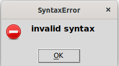
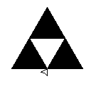

TP1 Variables et affectations
Thème 6 langages de programmation
Première NSI, Lycée du Parc
Crédits
Ce cours est inspiré du chapitre 1 du manuel NSI de la collection Tortue chez Ellipse, auteurs : Ballabonski, Conchon, Filliatre, N’Guyen.
Utiliser le mode interactif
Pour installer sur votre machine l’environnement Idle de programmation en Python, on peut le télécharger depuis le site officiel https://www.python.org/downloads/.
Au lycée dans une session Windows, un raccourci sur le bureau doit permettre de lancer Idle, et dans une session Ubuntu, il suffit d’ouvrir un terminal de commande avec CTRL + ALT + T et de saisir la commande idle-python3.x ou x est le numéro de version de Python (la touche de tabulation permet d’obtenir l’autocomplétion après avoir saisi idle-python3).
- Écrire les expressions suivantes avec un parenthésage explicite permettant d’indiquer l’ordre de priorité des opérations :
>>> 2 - 3 - 4
-5
>>> 1 / 2 ** 3
0.125
>>> 1/ 2 / 4
0.125
>>> 1/ 2 * 4
2.0
>>> 2 * 3 ** 2
18
>>> 2 ** 3 ** 2
512
>>> 34 // 3 % 4
3
>>> 5 % 3 ** 4
5
- Écrire les expressions suivantes avec le moins de parenthèses possibles :
>>> 2 + (8 * (4 - 5))
>>> (3 - 5) - ((6 * 2) / (5 ** 2))
Prédire la valeur affichée dans l’interprète Python après les séquences d’instructions suivantes.
- Séquence 1 :
>>> a = 5
>>> a = a + 1
>>> b = a
>>> b = b ** 2 - a
>>> print(b)
- Séquence 2 :
>>> a = 5
>>> b = 6
>>> a = a - b
>>> b = b + a
>>> a = b - a
>>> print(a, b)
- Séquence 3 :
>>> from random import randint
>>> a = randint(1, 100) #entier aléatoire entre 1 et 100
>>> b = randint(1, 100) #entier aléatoire entre 1 et 100
>>> a = a - b
>>> b = b + a
>>> a = b - a
>>> print(a, b)
Premiers programmes et premières erreurs
- Dans son espace personnel, créer un répertoire
Chapitre1 avec un sous-répertoire TP1.
- Le prix d’une matière première est de 873 euros la tonne au début de l’année. Ce prix subit des variations saisonnières : au premier trimestre il augmente de 347 euros, au second trimestre il augmente de 25 %, au troisième trimestre il subit une baisse de 50 % et enfin il diminue de 100 euros.
Créer un nouveau programme avec l’éditeur d’Idle et l’enregistrer dans Chapitre1/TP1 sous le nom prix.py.
Saisir dans ce fichier le code ci-dessous en le complétant afin qu’il calcule les valeurs successives de la variable prix.
prix = 873 #prix au début de l'année
prix = .... #prix à la fin du premier trimestre
prix = .... #prix à la fin du second trimestre
prix = .... #prix à la fin du troisième trimestre
prix = .... #prix à la fin de l'année
print("Prix final :", prix)
La température \(f\) en degrés Fahrenheit s’obtient à partir de la température \(c\) en degrés Celsius par la formule de conversion \(f=1,8 * c + 32\).
On veut écrire un programme qui réponde à la spécification suivante : convertir une mesure de température de l’échelle Celsius vers l’échelle Fahrenheit.
- Dans l’éditeur d’Idle, créer un programme
temperature.py et saisir le code ci-dessous :
f = input("Température en degrés Celsius ? "
d = 1,8 * f + 32
print("La température en degrés Fahrenheit est de ", d)
Exécuter le code, on doit obtenir un message d’erreur indiquant une erreur de Syntaxe. Un curseur indique dans le code la position où l’interpréteur Python s’est interrompu dans la lecture du code. Si le curseur est en début de ligne, il faut souvent chercher l’erreur à la fin de la ligne précédente …
Corriger l’erreur de syntaxe.

- Exécuter de nouveau le code, on doit obtenir un message d’erreur indiquant que Python ne peut réaliser l’opération demandée. On dit que l’interpréteur Python a levé une exception.
TypeError: can only concatenate str (not "int") to str
Insérer l’instruction print(type(f)) en ligne 2, exécuter de nouveau. Que représente la valeur affichée avant le message d’erreur ?
Remplacer la première instruction par float(input("Température en degrés Celsius ? ")) puis exécuter.
Quel est l’effet de la fonction float ? Afficher sa documentation dans l’interpréteur avec l’instruction help(float).
Si on teste le programme pour une température de 45 degrés Celsisus on doit obtenir l’affichage ci-dessous.
Est-ce que la spécification du programme est vérifiée ? Corriger le programme.
Température en degrés Celsius ? 45
<class 'float'>
La température en degrés Fahrenheit est de (1, 392.0)
Utiliser une bibliothèque
Le coeur du langage Python est constitué d’une grammaire, de mots clefs et d’une bibliothèque built-in rassemblant des instructions qui sont toujours disponibles : comme max, print, abs etc … Par ailleurs, des bibliothèques, appelées modules en Python, constituent des boîtes outils d’instructions que le programmeur peut réutiliser en important le module. La distribution standard de Python est livrée avec un ensemble de modules constituant sa bibliothèque standard.
Lorsqu’on a besoin d’utiliser une fonction de bibliothèque, on commence par explorer la bibliothèque standard dont les modules sont listés et documentés sur le site officiel https://www.python.org/. Une fois qu’on a déterminé le module qui nous intéresse, par exemple math, on dispose de plusieurs façons d’importer des instructions :
- Si on a besoin juste d’une instruction comme
sqrt, pour la fonction racine carrée, on peut écrire avant de l’appeler :
- Si on a besoin de plusieurs instructions, mais en nombre limité, comme
sqrt, cos et sin, on peut écrire avant de les appeler :
from math import sqrt, cos, sin
- Si on a besoin de beaucoup d’instructions du module, on peut utiliser le joker
* et écrire avant de les appeler :
Cette méthode peut sembler pratique mais elle est dangereuse si on importe plusieurs modules, qui contiennent des instructions avec les mêmes noms. Pour cloisonner les espaces de nommage, on préférera la méthode suivante.
- Une autre méthode consiste à importer juste le module, puis on peut accéder à chacune des instructions ou constantes qu’il contient en les préfixant du nom du module en notation pointée :
import math
racine3 = math.sqrt(3)
Cette méthode alourdit la syntaxe mais permet un meilleur cloisonnement des noms utilisés par les différents modules utilisés dans un même programme.

Le module graphique turtle permet de piloter un «crayon» afin de tracer dynamiquement des figures géométriques.
Les dessins sont réalisés dans un repère orthonormé virtuel centré sur la fenêtre d’affichage. L’unité des axes est le pixel. Le repère n’est pas visible à l’écran.
La forme par défaut du crayon de tracé est une flèche «orientée», placé au départ à l’origine du repère. Le crayon est situé à la pointe, la flèche montre le sens du tracé en cours ou à venir.
La liste complète des fonctions disponibles grâce au module turtle est disponible sur la documentation officielle. On pourra aussi télécharger un petit résumé au format .pdf en cliquant ici.
On donne ci-dessous un exemple de programme permettant de tracer un carré de côté 100 pixels.
# Carré programme 1
from turtle import *
up() #lever le crayon
goto(0,0)
down() #poser le crayon
goto(100, 0)
goto(100, 100)
goto(0,100)
goto(0,0)
exitonclick() #permet de fermer la fenêtre de tracé proprement
- Avec l’éditeur d’Idle, créer dans le répertoire
TP1 un nouveau programme tortue-polygones.py et importer toutes les fonctions du module turtle avec from turtle import *.
- Écrire un programme qui trace un carré de côté 100 pixels en utilisant les instructions
forward et left.
- Écrire un programme qui trace un triangle équilatéral de côté 100 pixels.
- Écrire un programme qui trace un hexagone régulier de côté 100 pixels.
- Avec l’éditeur d’Idle, créer dans le répertoire
TP1 un nouveau programme tortue-clef.py et importer toutes les fonctions du module turtle avec from turtle import *.
- Exécuter puis dans le du mode interactif la documentation de l’instruction
circle avec help(circle).
- Saisir dans le programme la séquence d’instructions suivante, exécuter puis observer.
from turtle import *
forward(60)
left(120)
forward(60)
right(90)
circle(60,150)
exitonclick()
- Compléter le programme pour afficher la figure de gauche.

& 
- Avec l’éditeur d’Idle, créer dans le répertoire
TP1 un nouveau programme tortue-triangles.py.
- Le programme ci-dessous permet de tracer un triangle équilatéral noir de côté 100 pixels. Compléter le code pour tracer la figure de droite avec la pyramide de triangles.
begin_fill()
fillcolor("black")
forward(100)
left(120)
forward(100)
left(120)
forward(100)
left(120)
end_fill()
- Avec l’éditeur d’Idle, créer dans le répertoire
TP1 un nouveau programme tortue-drapeau.py.
- Écrire un programme qui dessine le drapeau français.